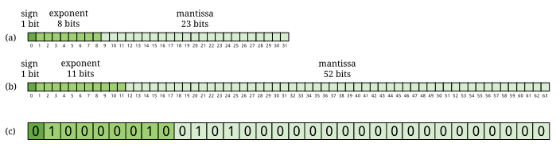

Capítulo 1. Noções básicas de informática
Computers are useless. They can only give you answers.
1.1. Problema: Comprando um computador
Começamos quase todos os capítulos deste livro com um problema motivador. Por quê? Às vezes, ajuda ver como as ferramentas podem ser aplicadas para entender por que são úteis. À medida que avançamos em cada capítulo, abordamos os conceitos básicos necessários para resolver o problema na seção Conceitos, os detalhes técnicos específicos (geralmente na forma de sintaxe Java) necessários na seção Sintaxe e, por fim, a solução para o problema nas seções Solução. Se você não estiver interessado no problema, tudo bem! Fique à vontade para pular para Seção 1.2 sobre hardware e software ou para Seção 1.3 sobre representação de dados, especialmente se você já tiver alguma experiência em programação. Então, se quiser ver outro exemplo detalhado, a solução para este problema está disponível em Seção 1.5 como referência.
Vamos começar com um problema que não tem a ver com programação e que talvez lhe seja familiar. Imagine que você está prestes a entrar na faculdade e precisa de um computador. Deveria comprar um Mac ou um PC? Que tipo de computador vai executar os programas mais rápido? Será que alguns tipos de computadores travam mais do que outros? Por quais recursos vale a pena pagar mais? Por que há tantos termos da moda e tanto jargão incompreensível associados à compra de um computador?
Quando muitas pessoas ouvem “ciência da computação”, essas costumam ser as primeiras perguntas que vêm à mente. A maior parte deste livro trata da programação de computadores em uma linguagem chamada Java e não dos computadores em si. Tentamos apresentar todo o material de forma que praticamente qualquer tipo de computador possa ser usado na programação dos problemas e exemplos. No entanto, tanto o hardware que compõe o seu computador quanto o outro software em execução nele afetam a maneira como os programas que você escreve funcionam.
1.2. Conceitos: Hardware e software
Os computadores estão por toda parte. Nós os vemos em quase todos os lugares. Eles estão presentes na maioria das casas, lojas, carros, aviões, telefones e dentro de muitos outros dispositivos. Às vezes, são visíveis, como um laptop sobre uma mesa, mas a maioria dos computadores fica oculta dentro de outros dispositivos, como um relógio ou uma televisão de tela plana. Os computadores podem ser máquinas complexas ou relativamente simples. Apesar de sua diversidade, podemos pensar em todos os computadores em termos de seu hardware e do software que nele é executado.
1.2.1. Hardware
O hardware consiste nos componentes físicos que compõem um computador, mas não nos programas ou dados armazenados nele. Os componentes de hardware podem ser vistos e tocados, se você estiver disposto a abrir o gabinete do computador. Uma maneira de organizar o hardware é dividi-lo em três categorias: o processador, a memória e os dispositivos de entrada e saída (E/S).
Essa visão de um computador é uma versão simplificada do que é chamado de arquitetura von Neumann ou computador de programa armazenado. É um bom (mas imperfeito) modelo da maioria dos computadores modernos. Nesse modelo, um programa (uma lista de instruções) é armazenado na memória. O processador carrega o programa e executa as instruções, algumas das quais exigem que o processador faça muitos cálculos. Às vezes, o processador lê dados da memória ou grava novos dados nela. Periodicamente, o processador pode enviar saída para um dos dispositivos de saída ou receber entrada de um dos dispositivos de entrada.
Em outras palavras, o processador pensa, a memória armazena e os dispositivos de E/S se comunicam com o mundo exterior. O processador fica entre a memória e os dispositivos de E/S. Vamos examinar essas categorias mais detalhadamente.

CPU
O processador, ou unidade central de processamento (CPU), é o “cerebro” de um computador. Ele recebe instruções, as decodifica e as executa. Ele pode enviar ou receber informações das memórias ou dispositivos de entrada e saída (E/S). A CPU, em quase todos os computadores modernos é um microprocessador, significando que toda computação é realizada por um circuito integrado fabricado em silício. Quais são as características importantes em uma CPU? Como medimos sua velocidade e potência?
| Frequência |
A velocidade de uma CPU (e de um computador como um todo) é geralmente apresentada em gigahertz (GHz). Hertz (Hz) é a unidade de medida de frequência. Se alguma coisa acontece uma vez por segundo, então sua frequência é exatamente 1 Hz. Talvez o ponteiro de segundos do seu relógio se mova numa frequência de 1 Hz.Na América do Norte, a corrente nas tomadas alternam com uma frequência de 60 Hz. O som também pode ser medido pela sua frequência. O som mais grave que um ouvido humano pode ouvir é de cerca de 20 Hz. O som mais agudo é cerca de 20.000 Hz. Um som como esse pulsa contra o seu tímpano 20.000 vezes por segundo. Parece muito, mas muitos computadores modernos operam em uma frequência de 1 a 4 gigahertz. O prefixo “giga” significa “bilhão”. Portanto, estamos falando de computadores realizando algo mais de um bilhão (1.000.000.000) de vezes por segundo. Mas o que eles estão fazendo? Essa frequência é a frequência de clock, que indica a frequência que um sinal elétrico passa pela CPU. Em cada ciclo, a CPU realiza algum cálculo. Quanto? Depende. Em alguns sistemas, simples instruções (como somar dois números) pode ser computada em um único ciclo de clock. Outras instruções podem levar dez ou mais ciclos. Diferentes projetos de processadores podem levar diferentes números de ciclos para executar as mesmas instruções. As instruções também são executadas em pipeline, o que significa que uma instrução está sendo executada enquanto outra está sendo buscada na memória ou decodificada. Diferentes processadores podem ter maneiras diferentes de otimizar esse processo. Devido a essas diferenças, a frequência de um processador, medida em gigahertz, não é uma maneira precisa de comparar a velocidade efetiva de um processador com a de outro, a menos que os dois processadores sejam muito semelhantes. Mesmo que não faça muito sentido, a frequência do clock é comumente anunciada como a velocidade de um computador. |
| Tamanho da palavra |
Talvez você já tenha ouvido falar de computadores de 32-bit ou 64-bit. Como nós falamos sobre no subtópico sobre memórias, um bit é um 0 ou um 1, a menor quantidade de informação que pode ser armazenada. A maioria dos novos computadores são 64-bit, o que significa que eles operam a 64 bits por vez e podem utilizar valores de 64-bit como endereços de memória. As instruções que eles executam nofmalmente performam em quantidades de 64-bit, ou seja, números compostos de 64 0s e 1s. O tamanho dos dados que um computador pode operar com uma única instrução é conhecido como tamamnho da palavra. Em operações do dia-a-dia, o tamanho da palavra não é importante para a maioria dos usuátios. Certos programas que interagem diretamente com o hardware, como sistemas operacionais, podem ser influenciados pelo tamanho da palavra. Por exemplo, a maioria dos sistemas operacionais de 32-bit foram desenvolvidos para funcionar em um processador de 64-bit, mas a maioria dos sistemas operacionais de 64-bit não funcionam em processadores 32-bit. Programas normalmente são executdos com maior velocidade em máquinas com um tamanho da palavra maior, mas normalmente consomem mais memória. Um processador de 32-bit (ou sistema operacional) não pode usar mais de 4 gigabytes (definido abaixo) de memória. Assim, um computador de 64-bit é necessário para aproveitar a grande quantidade de memória que existem hoje. |
| Cache |
O cérebro humano realiza cálculos e armazena informações. A CPU de um computador realiza cálculos, mas, na maioria das vezes, não armazena informações. O cache da CPU é a exceção. A maioria das CPUs modernas possui uma seção pequena e muito rápida de memória integrada diretamente ao chip. Ao prever quais informações a CPU utilizará em seguida, ela pode pré-carregá-las no cache e evitar a espera pela memória normal, que é mais lenta. Com o tempo, os caches se tornaram mais complexos e, muitas vezes, possuem vários níveis. O primeiro nível é muito pequeno, mas incrivelmente rápido. O segundo nível é maior e mais lento. E assim por diante. Seria preferível ter um cache de primeiro nível grande, mas memória rápida é memória cara. Cada nível é maior, mais lento e mais barato que o anterior. O tamanho do cache não é um recurso da CPU amplamente divulgado, mas faz uma enorme diferença no desempenho. Um processador com um cache maior pode frequentemente superar um processador que é mais rápido em termos de frequência de clock. |
| Núcleos |
A maioria do notebooks e computadores de mesa disponíveis hoje possui processadores multicore. Esses processadores contêm dois, quatro, seis ou até mais núcleos. Cada núcleo é um processador capaz de executar instruções de forma independente, e todos eles podem se comunicar com a mesma memória. Em teoria, ter seis núcleos poderia permitir que seu computador funcionasse seis vezes mais rápido. Na prática, esse aumento de velocidade é difícil de alcançar. Aprender como obter mais desempenho de sistemas multicore é um dos principais temas deste livro. Concorrência e Sincronização, bem como as seções marcadas com Concorrência em outros capítulos, são especificamente adaptadas para alunos interessados em programar esses sistemas multicore para que funcionem de maneira eficaz. Se você não estiver interessado em programação concorrente, pode pular esses capítulos e seções e usar este livro como um manual introdutório tradicional de programação Java. Por outro lado, se você estiver interessado na área cada vez mais importante da programação concorrente, Concorrência: Processos Multicores perto do final deste capítulo é a primeira seção Concorrência do livro e discute os processadores multicore mais profundamente. |
Memory
A memória é onde todos os programas e dados de um computador são armazenados. A memória de um computador geralmente não é um único componente de hardware. Em vez disso, as necessidades de armazenamento de um computador são atendidas por diversas tecnologias.
No topo da pirâmide da memória está o armazenamento primário, a memória que a CPU pode acessar e controlar diretamente. Em computadores de mesa e portáteis, o armazenamento primário geralmente assume a forma de memória de acesso aleatório (RAM). Ela é chamada de memória de acesso aleatório porque leva o mesmo tempo para acessar qualquer parte da RAM. A RAM tradicional é volátil, o que significa que seu conteúdo é perdido quando a energia é desligada. Todos os programas e dados devem ser carregados na RAM para serem usados pela CPU.
Depois do armazenamento primário vem o armazenamento secundário. O campo do armazenamento secundário é dominado por discos rígidos que armazenam dados em pratos magnéticos giratórios, embora a tecnologia flash esteja começando a substituí-los. Unidades ópticas (como CD, DVD e Blu-ray) e as unidades de disquete, agora praticamente obsoletas, também se enquadram na categoria de armazenamento secundário. O armazenamento secundário é mais lento que o primário, mas é não volátil. Algumas formas de armazenamento secundário, como CD-ROM e DVD-ROM, são somente de leitura, mas a maioria é capaz de ler e gravar.
Antes de podermos comparar esses tipos de armazenamento de forma eficaz, precisamos ter um sistema para medir a quantidade de dados que eles armazenam. Nos computadores digitais modernos, todos os dados são armazenados como uma sequência de 0s e 1s. Na memória, o espaço que pode conter um único 0 ou um único 1 é chamado de bit, que é a abreviação de “binary digit”(dígito binário).
Um bit é uma quantidade minúscula de informação. Para fins organizacionais, chamamos uma sequência de oito bits de byte. O tamanho em palavras de uma CPU é de dois ou mais bytes, mas a capacidade de memória é geralmente listada em bytes, não em palavras.

Tanto a capacidade de armazenamento primário quanto a secundária tornaram-se tão grandes que é inconveniente descrevê-las em bytes. Os cientistas da computação adotaram prefixos da física para criar unidades adequadas.
Unidades comuns para medir memória são bytes, kilobytes, megabytes, gigabytes e terabytes. Cada unidade é 1.024 vezes maior que a unidade anterior. Você deve ter notado que 210 (1.024) é quase igual a 103 (1.000). Às vezes, não fica claro qual valor se refere. Os fabricantes de unidades de disco sempre usam potências de 10 quando indicam o tamanho de seus discos. Assim, um disco rígido de 1 TB pode armazenar 1012 (1.000.000.000.000) bytes, e não 240 (1.099.511.627.776) bytes. Organizações de padronização têm defendido que os termos kibibyte (KiB), mebibyte (MiB), gibibyte (GiB) e tebibyte (TiB) sejam usados para se referir às unidades baseadas em potências de 2, enquanto os nomes tradicionais sejam usados apenas para se referir às unidades baseadas em potências de 10, mas os novos termos ainda não se popularizaram.
| Unidade | Tamanho | Bytes | Medida Prática |
|---|---|---|---|
byte |
8 bits |
20 = 100 |
um único caracter |
kilobyte (KB) |
1,024 bytes |
210 ≈ 103 |
um parágrafo de texto |
megabyte (MB) |
1,024 kilobytes |
220 ≈ 106 |
um minuto de uma música MP3 |
gigabyte (GB) |
1,024 megabytes |
230 ≈ 109 |
uma hora de streaming de vídeo em qualidade padrão |
terabyte (TB) |
1,024 gigabytes |
240 ≈ 1012 |
80% da capacidade da memória humana, estimado por Raymond Kurzweil |
No início desta seção, nos referimos à memória como uma pirâmide. No topo, há uma quantidade pequena, mas muito rápida, de memória. À medida que descemos pela pirâmide, a capacidade de armazenamento aumenta, mas a velocidade diminui. É claro que a pirâmide varia de computador para computador. Abaixo, há uma tabela que mostra vários tipos de memória, ordenados da mais rápida e menor à mais lenta e maior. A velocidade efetiva é difícil de medir (e muda à medida que a tecnologia avança), mas observe que cada camada da pirâmide tende a ser de 10 a 100 vezes mais lenta do que a camada anterior.
| Memória | Capacidade Típica | Uso |
|---|---|---|
Cache |
kilobytes ou megabytes |
O cache é um armazenamento rápido e temporário para a própria CPU. As CPUs modernas possuem dois ou três níveis de cache, que se tornam progressivamente maiores e mais lentos. |
RAM |
gigabytes |
A maior parte da memória primária é a RAM. A RAM vem em módulos que podem ser trocados para atualizar um computador. |
Unidades Flash |
gigabytes até terabytes |
As unidades flash oferecem um dos armazenamentos secundários mais rápidos disponíveis para consumidores comuns. Os pen drives vêm na forma de dispositivos USB tipo chaveiro, mas também como unidades que ficam dentro do computador (às vezes chamadas de unidades de estado sólido ou SSDs). À medida que o preço das unidades flash caem, espera-se que eles substituam totalmente os discos rígidos. Alguns SSDs já têm capacidades na faixa dos terabytes. |
Discos rígidos |
terabytes |
Os discos rígidos ainda são o armazenamento secundário mais comum para desktops, laptops e servidores. Eles têm velocidade limitada, em parte devido às suas peças móveis. |
Backup em fita |
terabytes e mais |
Algumas grandes empresas ainda armazenam enormes quantidades de informação em fitas magnéticas. As fitas têm bom desempenho para acessos sequenciais longos. |
Armazenamento em rede |
terabytes e mais |
O armazenamento acessado por meio de uma rede é limitado pela velocidade da rede. Muitas empresas utilizam computadores em rede para backup e redundância, bem como para computação distribuída. Amazon, Google, Microsoft e outras empresas alugam seus sistemas de armazenamento em rede a taxas baseadas no tamanho do armazenamento e na taxa de transferência total de dados. Esses serviços fazem parte do que é chamado de computação em nuvem. |
Dispositivos E/S
Os dispositivos de E/S apresentam uma variedade muito maior do que as CPUs ou a memória. Alguns dispositivos de E/S, como as portas USB, estão permanentemente conectados à CPU por meio de uma placa de circuito impresso. Outros dispositivos, chamados de periféricos, são conectados ao computador conforme necessário. Seus tipos e recursos são muitos e variados, e este livro não aborda em profundidade como interagir com dispositivos de E/S.
Dispositivos de entrada comuns incluem mouses, teclados, touchpads, microfones, controles de videogame e mesas digitalizadoras. Dispositivos de saída comuns incluem monitores, alto-falantes e impressoras. Alguns dispositivos realizam tanto entrada quanto saída, como as placas de rede.
Lembre-se de que nossa visão do hardware do computador como CPU, memória e dispositivos de E/S é apenas um modelo. Um soquete PCI Express pode ser considerado um dispositivo de E/S, mas a placa de vídeo que se encaixa no soquete também pode ser considerada um. E o monitor que se conecta à placa de vídeo é mais um. Embora a placa de vídeo seja um dispositivo de E/S, ela também possui seu próprio processador e memória. Não faz sentido se perder em detalhes, a menos que sejam relevantes para o problema que você está tentando resolver. Uma das habilidades mais importantes na ciência da computação é encontrar o nível certo de detalhe e abstração para analisar um determinado problema.
1.2.2. Software
Sem hardware, os computadores não existiriam, mas o software é igualmente importante. O software consiste nos programas e dados que são executados e armazenados pelo computador. O foco deste livro é aprender a escrever software.
O software abrange uma variedade quase infinita de programas de computador. Com as ferramentas certas (muitas das quais são gratuitas), qualquer pessoa pode escrever um programa que rode em uma máquina Windows, Mac ou Linux. Embora seja quase impossível listar todos os diferentes tipos de software, vale a pena mencionar algumas categorias.
| Sistemas Operacionais |
O sistema operacional (SO) é o software que gerencia a interação entre o hardware e o restante do software. Programas chamados drivers são adicionados ao SO para cada dispositivo de hardware. Por exemplo, quando um aplicativo deseja imprimir um documento, ele se comunica com a impressora por meio de um driver de impressora personalizado para aquela impressora específica, o SO e o hardware do computador. O SO também agenda, executa e gerencia a memória para todos os outros programas. Os três SO mais comuns para computadores desktop são o Microsoft Windows, o Apple macOS e o Linux. Atualmente, todos os três rodam em hardware semelhante, baseado nas arquiteturas Intel x86 e x64. A Microsoft não vende computadores desktop, mas muitos computadores desktop e laptops vêm com o Windows pré-instalado. Para pessoas físicas e jurídicas que montam seu próprio hardware, também é possível adquirir o Windows separadamente. Em contrapartida, quase todos os computadores que rodam o macOS são vendidos pela Apple, e o macOS geralmente vem integrado ao computador. O Linux é um software de código aberto, o que significa que todo o código-fonte usado para criá-lo está disponível gratuitamente. Apesar do Linux ser gratuito, muitos consumidores preferem o Windows ou o macOS devido à facilidade de uso, compatibilidade com softwares específicos e suporte técnico. Muitos consumidores também não sabem que o hardware pode ser adquirido separadamente de um sistema operacional ou que o Linux é uma alternativa gratuita aos outros dois. Outros computadores também possuem sistemas operacionais. Muitos tipos de telefones celulares utilizam o sistema operacional Android, do Google. O iPad e o iPhone da Apple utilizam o iOS, concorrente da Apple. Telefones, fornos de micro-ondas, automóveis e inúmeros outros dispositivos possuem computadores internos que utilizam algum tipo de sistema operacional incorporado. Considere dois aplicativos em execução em um telefone celular com uma CPU de núcleo único. Um aplicativo é um navegador da web e o outro é um reprodutor de música. O usuário pode começar a ouvir música e, em seguida, iniciar o navegador. Para funcionar, ambos os aplicativos precisam acessar a CPU ao mesmo tempo. Como a CPU tem apenas um núcleo, ela pode executar apenas uma instrução por vez. Em vez de forçar o usuário a terminar de ouvir a música antes de usar o navegador da web, o sistema operacional alterna a CPU entre os dois aplicativos muito rapidamente. Essa alternância permite que o usuário continue navegando enquanto a música toca em segundo plano. O usuário tem a ilusão de que ambos os aplicativos estão usando a CPU ao mesmo tempo. |
| Compiladores |
Um compilador é um tipo de programa particularmente importante para os programadores. Os programas de computador são escritos em linguagens especiais, como Java, que são legíveis para os humanos. Um compilador pega esse programa legível para humanos e o transforma em instruções (geralmente código de máquina) que um computador pode entender. Para compilar os programas deste livro, você usa o compilador Java |
| Aplicativos Empresariais |
Existem muitos tipos diferentes de programas que se enquadram na categoria de software empresarial ou de produtividade. Talvez o mais conhecido seja o pacote de ferramentas Microsoft Office, que inclui o processador de texto Word, a planilha eletrônica Excel e o software de apresentações PowerPoint. Os programas dessa categoria costumam ser os primeiros a vir à mente quando as pessoas pensam em software, e essa categoria teve um impacto histórico tremendo. A popularidade do Microsoft Office levou à ampla adoção do Microsoft Windows na década de 1990. Um único aplicativo tão desejável que um consumidor está disposto a comprar o hardware e o sistema operacional apenas para poder executá-lo é, às vezes, chamado de killer app. |
| Video Games |
Os videogames são softwares como qualquer outro programa, mas merecem atenção especial por representarem uma indústria gigantesca, avaliada em bilhões de dólares. Geralmente, são desafiadores de programar, e o setor de desenvolvimento de videogames é altamente competitivo. Os gráficos 3D intensos exigidos pelos videogames modernos levaram fabricantes de hardware como Nvidia, AMD e Intel a desenvolver placas de vídeo de alto desempenho para computadores desktop e laptops. Ao mesmo tempo, empresas como Nintendo, Sony e Microsoft desenvolveram consoles como o Switch 2, o PlayStation 5 e o Xbox Series X, que são especializados em videogames, mas não foram projetados para tarefas gerais de computação. |
| Navegadores Web |
Os navegadores da Web são programas capazes de se conectar à Internet, baixar e exibir páginas da Web e outros arquivos. Os primeiros navegadores da Web só conseguiam exibir páginas relativamente simples, contendo texto e imagens. Devido à crescente importância da comunicação pela Internet, os navegadores da Web evoluíram para reproduzir sons, exibir vídeos e permitir uma comunicação sofisticada em tempo real. Entre os navegadores da Web mais populares estão o Microsoft Edge, o Mozilla Firefox, o Apple Safari e o Google Chrome. Cada um deles apresenta vantagens e desvantagens em termos de compatibilidade, conformidade com padrões, segurança, velocidade e suporte ao cliente. |
1.3. Sintaxe: Representação de dados
Após cada seção Conceitos, este livro geralmente apresenta uma seção Sintaxe. Sintaxe é o conjunto de regras de uma linguagem. Essas seções Sintaxe geralmentese concentram em recursos concretos da linguagem Java e em detalhes técnicos relacionados aos conceitos descritos no capítulo.
Neste capítulo, ainda estamos tentando descrever computadores em um nível geral. Consequentemente, os detalhes técnicos que abordaremos nesta seção não serão sobre a sintaxe do Java. Embora tudo o que dizemos se aplique ao Java, também se aplica a muitas outras linguagens de programação.
1.4. Compiladores e Interpretadores
Este livro trata principalmente da resolução de problemas por meio de programas de computador. Daqui em diante, só mencionaremos o hardware quando ele tiver impacto na programação. O primeiro passo para escrever um programa de computador é decidir qual linguagem usar.
A maioria das pessoas se comunica por meio de línguas naturais, como o chinês, o inglês, o francês, o russo ou o tâmil. No entanto, os computadores têm dificuldade em compreender línguas naturais. Como um meio-termo, os programadores escrevem programas (instruções para o computador seguir) em uma linguagem mais semelhante a uma linguagem natural do que à linguagem compreendida pela CPU. Essas linguagens são chamadas de linguagens de alto nível, porque estão mais próximas da linguagem natural (o nível mais alto) do que da linguagem de máquina (o nível mais baixo). Também podemos nos referir à linguagem de máquina como código de máquina ou código nativo.
Milhares de linguagens de programação foram criadas ao longo dos anos, mas algumas das linguagens de alto nível mais populares de todos os tempos incluem Fortran, Cobol, Visual Basic, C, C++, Python, Java, JavaScript (que é quase totalmente independente do Java) e C#.
Como mencionamos na seção anterior, um compilador é um programa que traduz uma linguagem para outra. Em muitos casos, um compilador traduz uma linguagem de alto nível para uma linguagem de baixo nível que a CPU possa compreender e executar. Como todo o trabalho é feito antecipadamente, esse tipo de compilação é conhecido como compilação estática ou antecipada. Em outros casos, a saída do compilador é uma linguagem intermediária que é mais fácil para o computador compreender do que a linguagem de alto nível, mas ainda assim requer alguma tradução antes que o computador possa seguir as instruções.
Um interpretador é um programa semelhante a um compilador. No entanto, um interpretador recebe código em uma linguagem como entrada e, em tempo real, executa cada instrução na CPU à medida que a traduz. Os interpretadores geralmente executam o código mais lentamente do que se ele tivesse sido traduzido para linguagem de máquina antes da execução.
Observe que tanto compiladores quanto interpretadores são programas normais. Eles geralmente são escritos em linguagens de alto nível e compilados para linguagem de máquina antes da execução. Isso levanta uma questão filosófica: se você precisa de um compilador para criar um programa, de onde veio o primeiro compilador?

Java é a popular linguagem de programação de alto nível em que nos concentramos neste livro. A maneira padrão de executar um programa Java envolve uma etapa adicional que muitas linguagens compiladas não possuem. A maioria dos compiladores de Java, embora não todos, traduz um programa escrito em Java para uma linguagem intermediária conhecida como bytecode. Essa versão intermediária do programa de alto nível é usada como entrada para outro programa chamado JVM "Java Virtual Machine"(Máquina Virtual Java) . A maioria das JVMs populares traduz o bytecode em código de máquina que é executado diretamente pela CPU. Essa conversão de bytecode em código de máquina é feita com um compilador just-in-time (JIT). É chamado de “just-in-time” porque as seções do bytecode não são compiladas até o momento em que são necessárias. Como a saída será usada para essa execução específica do programa, o JIT pode fazer otimizações para que o código de máquina final funcione particularmente bem no ambiente atual.
Por que o Java usa a etapa intermediária do bytecode? Um dos objetivos de design do Java é ser independente de plataforma, o que significa que ele pode ser executado em qualquer tipo de computador. Esse é um objetivo difícil, pois cada combinação de SO e CPU precisará de instruções de baixo nível diferentes.
O Java aborda o problema mantendo seu bytecode independente de plataforma. Você pode compilar um programa em bytecode em uma máquina Windows e, em seguida, executar o bytecode em uma JVM em um ambiente macOS. Parte do trabalho é independente de plataforma, e parte não é. Cada JVM deve ser adaptada à combinação de sistema operacional e hardware em que é executada. A Sun Microsystems, Inc., desenvolvedora original da linguagem Java e da JVM, comercializou esse recurso da linguagem com o slogan “Escreva uma vez, execute em qualquer lugar.”
A Sun Microsystems foi comprada pela Oracle Corporation em 2009. A Oracle continua a produzir o HotSpot, a JVM padrão, mas existem muitas outras JVMs, incluindo o Apache Harmony e o Dalvik, a JVM do Google Android.
1.4.1. Números
Todos os dados dentro de um computador são representados por números. Embora os seres humanos utilizem números em nosso dia a dia, a representação e a manipulação de números pelos computadores funcionam de maneira diferente. Nesta subseção, apresentamos os conceitos de sistemas numéricos, bases, conversão de uma base para outra e aritmética em sistemas numéricos arbitrários.
Alguns Sistemas Numéricos
Um sistema numérico é uma forma de representar números. É fácil confundir o algarismo que representa o número com o próprio número. Você pode pensar no número dez como “10,”, um algarismo composto por dois símbolos, mas o próprio número é o conceito de ser dez. Você poderia expressar essa quantidade levantando todos os dedos, com o símbolo “X,” ou batendo dez vezes.
Representar dez com “10” é um exemplo de um sistema numérico posicional, ou seja, de base 1. Em um sistema numérico posicional, a posição dos dígitos determina a magnitude que eles representam. Por exemplo, o numeral 3.432 contém o dígito 3 duas vezes. Na primeira vez, ele representa três grupos de mil. Na segunda vez, representa três grupos de dez. Em contrapartida, o sistema numérico romano é um exemplo de sistema numérico que não é posicional.
O número 3.432 e, possivelmente, todos os outros números escritos normalmente que você já viu são expressos na base 10 ou no sistema decimal. É chamado de base 10 porque, à medida que você se move do dígito mais à direita para a esquerda, o valor de cada posição aumenta em um fator de 10. Além disso, na base 10, dez é o menor inteiro positivo que requer dois dígitos para ser representado. Cada número menor tem seu próprio dígito: 0, 1, 2, 3, 4, 5, 6, 7, 8 e 9. Representar dez requer a combinação de dois dígitos existentes. Toda base tem a propriedade de que o número que lhe dá nome requer dois dígitos para ser escrito, a saber, “1” e “0.” (Uma exceção é a base 1, que não se comporta como as outras bases e não é um sistema numérico posicional normal.)
O número 723 pode ser escrito como 723 = 7 · 102 + 2 · 101 + 3 · 100.
Observe que o dígito mais à direita é a casa das unidades, o que equivale a 100. Certifique-se de começar com b0 e não com b1_ ao considerar o valor de um número escrito na base b, independentemente do valor de b. O segundo dígito a partir da direita é multiplicado por 101, e assim por diante. O produto de um dígito pela potência correspondente de 10 nos diz quanto um dígito contribui para o número. Na expansão acima, o dígito 7 contribui com 700 para o número 723. Os dígitos 2 e 3 contribuem, respectivamente, com 20 e 3 para 723.
À medida que avançamos para a direita, a potência de 10 diminui em um, e esse padrão funciona mesmo para potências negativas de 10. Se expandirmos o valor fracionário 0,324, obtemos 0,324 = 3 · 10-1 + 2 · 10-2 + 4 · 10-3.
Podemos combinar os dois números acima para obter 723,324 = 7 · 102 + 2 · 101 + 3 · 100 + 3 · 10-1 + 2 · 10-2 + 4 · 10-3.
Podemos estender essas ideias a qualquer base, verificando nossa lógica em relação à conhecida base 10. Suponhamos que um numeral seja composto por n símbolos sn-1, sn-2, …, s1, s0. Além disso, suponhamos que esse numeral pertença ao sistema numérico de base _b. Podemos expandir o valor desse numeral da seguinte forma:
sn-1 sn-2 … s1 s0 = sn-1 · bn-1 + sn-2 · bn-2 + … + s1 · b1 + s0 · b0
O símbolo mais à esquerda no número é o dígito de maior ordem e o símbolo mais à direita é o dígito de menor ordem. Por exemplo, no número decimal 492, 4 é o dígito de maior ordem e 2, o dígito de menor ordem.
As frações podem ser expandidas de maneira semelhante. Por exemplo, uma fração com n símbolos s1, s2, …, sn-1, sn_ em um sistema numérico de base b pode ser expandida para:
0.s1 s2 … sn-2 sn-1 = s1 · b-1 + s2 · b-2 + … + sn-1 · b-n+1 + sn · b-n
Como cientistas da computação, temos um interesse especial pela base 2, pois é a base usada para expressar números dentro dos computadores. A base 2 também é chamada de binária. Os únicos símbolos permitidos para representar números em binário são “0” e “1”, os dígitos binários ou bits.
No número binário 10011, o 1 mais à esquerda é o bit de ordem mais alta e o 0 mais à direita é o bit de ordem mais baixa. Pelas regras dos sistemas numéricos posicionais, o bit de ordem mais alta representa 1 · 24 = 16.
Exemplos de números escritos em binário são 1002, 1112, 101012 e 110000012 Lembre-se de que a base do sistema numérico binário é 2. Assim, podemos escrever um número em binário como a soma dos produtos das potências de 2. Por exemplo, o número 100112 pode ser expandido para:
100112 = 1 · 24 + 0 · 23 + 0 · 22 + 1 · 21 + 1 · 20 = 16 + 0 + 0 + 2 + 1 = 19
Ao expandir o número, também mostramos como converter um número binário em um número decimal. Lembre-se de que tanto 100112 quanto 19 representam o mesmo valor, ou seja, dezenove. A conversão entre bases altera apenas a forma como o número é escrito. Como antes, o bit mais à direita é multiplicado por 20 para determinar sua contribuição para o número binário. O bit à sua esquerda é multiplicado por 21 para determinar sua contribuição, e assim por diante. Neste caso, o 1 mais à esquerda contribui com 1 · 24 = 16 para o valor.
Outro sistema numérico útil é o base 16, também conhecido como hexadecimal. O sistema hexadecimal é surpreendente porque requer mais do que os 10 dígitos a que estamos acostumados. Os números nesse sistema são escritos com 16 dígitos hexadecimais, que incluem os dez dígitos de 0 a 9 e as seis letras A, B, C, D, E e F. As seis letras, começando por A, correspondem aos valores 10, 11, 12, 13, 14 e 15.
O hexadecimal é usado como uma representação compacta do binário. Embora os números binários possam ficar muito longos, quatro dígitos binários podem ser representados com apenas um único dígito hexadecimal.
39A16, 3216 e AFBC1216 são exemplos de números escritos em hexadecimal. Um número hexadecimal pode ser expresso como a soma dos produtos das potências de 16. Por exemplo, o número hexadecimal A0BF16 pode ser expandido para:
A · 163 + 0 · 162 + B · 161 + F · 160
Para converter um número hexadecimal em decimal, devemos substituir os dígitos de A a F pelos valores de 10 a 15. Agora podemos reescrever a soma dos produtos acima como:
10 · 163 + 0 · 162 + 11 · 161 + 15 · 160 = 40.960 + 0 + 176 + 15 = 41.151
Assim, obtemos A0BF16 = 41.151.
O sistema numérico de base 8 também é chamado de octal. Assim como o hexadecimal, o octal é usado como uma forma abreviada do binário. Um número octal utiliza os dígitos octais 0, 1, 2, 3, 4, 5, 6 e 7. Fora isso, aplicam-se as mesmas regras. Por exemplo, o número octal 377 pode ser expandido para:
3778 = 3 · 82 + 7 · 81 + 7 · 80 = 255
Você deve ter notado que nem sempre fica claro em qual base um numeral está escrito. A sequência de dígitos 337 é um numeral válido em octal, decimal e hexadecimal, mas representa números diferentes em cada sistema. Os matemáticos usam um subscrito para indicar a base na qual um numeral está escrito.
Assim, 3378 = 25510, 37710 = 37710, e 37716 = 88710. Os números de base são sempre escritos na base 10. Presume-se que um número sem subscrito esteja na base 10. Em Java, não há como marcar subscritos, então são usados prefixos. O prefixo 0b é usado para binário, o prefixo 0 é usado para octal, nenhum prefixo é usado para decimal e o prefixo 0x é usado para hexadecimal. Os números correspondentes no código Java seriam, portanto, escritos como 0377, 377 e 0x377. Tenha cuidado para não preencher números com zeros em Java, pois eles podem ser interpretados como base 8! Lembre-se de que o valor 056 não é o mesmo que o valor 56 em Java.
A tabela a seguir lista algumas características dos quatro sistemas numéricos que discutimos, com representações dos números 7 e 29.
| Sistema Numérico | Base | Digitos | Numerais Matemáticos |
Numerais Java |
|---|---|---|---|---|
Binário |
2 |
0, 1 |
1112, 111012 |
|
Octal |
8 |
0, 1, 2, 3, 4, 5, 6, 7 |
78, 358 |
|
Decimal |
10 |
0, 1, 2, 3, 4, 5, 6, 7, 8, 9 |
7, 29 |
|
Hexadecimal |
16 |
0, 1, 2, 3, 4, 5, 6, 7, 8, 9, A, B, C, D, E, F |
716, 1D16 |
|
Conversão entre sistemas numéricos
É útil saber como converter um número representado em uma base para a representação equivalente em outra base. Nossos exemplos mostraram como converter um número em qualquer base para o sistema decimal, expandindo-o na forma de soma de produtos e, em seguida, somando os diferentes termos. Mas como converter um número decimal para outra base?
Conversão decimal para binário
Existem pelo menos duas maneiras diferentes de converter um número decimal em binário. Uma delas consiste em escrever o número decimal como uma soma de potências de dois, como na seguinte conversão do número 23.
23 = 16 + 0 + 4 + 2 + 1 = 1 · 24 + 0 · 23 + 1 · 22 + 1 · 21 + 1 · 20 = 101112
Primeiro, encontre a maior potência de dois que seja menor ou igual ao número. Neste caso, 16 se encaixa, pois 32 é muito grande. Subtraia esse valor do número, restando 7 neste caso. Em seguida, repita o processo. O último passo é reunir os coeficientes das potências de dois em uma sequência para obter o equivalente binário. Usamos 16, 4, 2 e 1, mas pulamos o 8. Se escrevermos um 1 para cada posição que usamos e um 0 para cada posição que pulamos, obtemos 2³ = 101112. Embora esse seja um procedimento simples para a conversão de decimal para binário, ele pode ser complicado para números maiores.
Uma maneira alternativa de converter um número decimal em seu equivalente binário é dividir o número dado por 2 até que o quociente seja 0 (mantendo apenas a parte inteira do quociente). A cada etapa, registre o resto obtido ao dividir por 2. Reúna esses restos (que serão sempre 0 ou 1) para formar o equivalente binário. O bit menos significativo é o resto obtido após a primeira divisão, e o bit mais significativo é o resto obtido após a última divisão. Em outras palavras, essa abordagem determina os dígitos do número binário na ordem inversa.
Vamos usar esse método para converter 23 em seu equivalente binário. A tabela a seguir mostra as etapas necessárias para a conversão. A coluna mais à esquerda indica o número da etapa. A segunda coluna contém o número a ser dividido por 2 em cada etapa. A terceira coluna contém o quociente de cada etapa, e a última coluna contém o resto atual.
| Etapa | Número | Quociente | Resto |
|---|---|---|---|
1 |
23 |
11 |
1 |
2 |
11 |
5 |
1 |
3 |
5 |
2 |
1 |
4 |
2 |
1 |
0 |
5 |
1 |
0 |
1 |
Começamos dividindo 23 por 2, obtendo 11 como quociente e 1 como resto. O quociente 11 é então dividido por 2, resultando em 5 como quociente e 1 como resto. Esse processo continua até chegarmos a um quociente de 0 e um resto de 1 na Etapa 5. Agora escrevemos os restos do mais recente para o menos recente e obtemos o mesmo resultado de antes, 23 = 101112.
Outras conversões
Um número decimal pode ser convertido para seu equivalente hexadecimal usando qualquer um dos dois procedimentos descritos acima. Em vez de escrever um número decimal como uma soma de potências de 2, escreve-se como uma soma de potências de 16. Da mesma forma, ao usar o método da divisão, em vez de dividir por 2, divide-se por 16. A conversão para o sistema octal é semelhante.
Usamos o sistema hexadecimal porque é fácil converter dele para o binário e vice-versa. A tabela a seguir lista os equivalentes binários dos 16 dígitos hexadecimais.
| Dígito Hexadecimal |
Equivalente Binário |
Dígito Hexadecimal |
Equivalente Binário |
|---|---|---|---|
0 |
0000 |
8 |
1000 |
1 |
0001 |
9 |
1001 |
2 |
0010 |
A |
1010 |
3 |
0011 |
B |
1011 |
4 |
0100 |
C |
1100 |
5 |
0101 |
D |
1101 |
6 |
0110 |
E |
1110 |
7 |
0111 |
F |
1111 |
Com a ajuda da tabela acima, vamos converter 3FA16 para binário. Por simples substituição, 3FA16 = 0011 1111 10102. Observe que agrupamos os dígitos binários em blocos de 4 bits cada. É claro que os zeros mais à esquerda no equivalente binário são irrelevantes, pois não contribuem para o valor do número.
Representação de números inteiros em um computador
Na matemática, os números binários podem representar números arbitrariamente grandes. Dentro de um computador, o tamanho de um número é limitado pelo número de bits usados para representá-lo. Para cálculos de uso geral, são comumente utilizados inteiros de 32 e 64 bits. O maior inteiro que o Java representa com 32 bits é 2.147.483.647, o que é suficiente para a maioria das tarefas. Para números maiores, o Java pode representar até 9.223.372.036.854.775.807 com 64 bits. O Java também oferece representações para inteiros usando 8 e 16 bits.
Essas representações são fáceis de determinar para números positivos: encontre o equivalente binário do número e, em seguida, preencha o lado esquerdo com zeros para ocupar o espaço restante. Por exemplo, 19 = 100112. Se armazenado usando 8 bits, 19 seria representado como 0001 0011. Se armazenado usando 16 bits, 19 seria representado como 0000 0000 0001 0011. (Separamos grupos de 4 bits para facilitar a leitura).
Aritmética binária
Lembre-se de que os computadores lidam com números em sua representação binária, o que significa que toda a aritmética é realizada com números binários. Às vezes, é útil compreender como esse processo funciona e compará-lo com a aritmética decimal. A tabela abaixo lista as regras para a adição binária.
| + | 0 | 1 |
|---|---|---|
0 |
0 |
1 |
1 |
1 |
10 |
Conforme indicado acima, a soma de dois 1s resulta em um 0, com um transporte de 1 para a posição seguinte à esquerda. A soma de números compostos por mais de um bit segue as mesmas regras de qualquer soma, transportando valores excessivamente grandes para a posição seguinte. Na soma decimal, valores acima de 9 devem ser transportados. Na soma binária, valores acima de 1 devem ser transportados. O exemplo a seguir mostra uma demonstração de soma binária. Para simplificar a apresentação, assumimos que os números inteiros são representados com apenas 8 bits.
Vamos somar os números 60 e 6 no sistema binário. Usando as técnicas de conversão descritas acima, podemos ver que 60 = 111100₂ e 6 = 110₂. No computador, esses números já estariam no sistema binário e preenchidos com zeros à esquerda para ocupar 8 bits.
| Binário | Decimal | |
|---|---|---|
|
|
|
+ |
|
|
|
|
O resultado não é nenhuma surpresa, mas observe que a soma pode ser realizada em binário sem a necessidade de conversão para decimal em nenhum momento.
A subtração no sistema binário também é semelhante à subtração no sistema decimal. As regras estão apresentadas na tabela a seguir.
| - | 0 | 1 |
|---|---|---|
0 |
0 |
1 |
1 |
(1)1 |
0 |
Ao subtrair um 1 de um 0, toma-se emprestado um 1 da posição imediatamente à esquerda. O exemplo a seguir ilustra a subtração binária.
Mais uma vez, usaremos 60 e 6 e seus equivalentes binários indicados acima.
| Binário | Decimal | |
|---|---|---|
|
|
|
- |
|
|
|
|
Representação de números inteiros negativos em um computador
Os números inteiros negativos também são representados na memória do computador como números binários, utilizando um sistema chamado complemento a dois. Ao analisar a representação binária de um número inteiro com sinal em um computador, o bit mais à esquerda (o mais significativo) será 1 se o número for negativo e 0 se for positivo. Infelizmente, encontrar a representação de um número negativo envolve mais do que apenas inverter esse bit.
Suponhamos que precisemos encontrar o equivalente binário do número decimal -12 usando 8 bits na forma de complemento de dois. O primeiro passo é converter 12 para seu equivalente binário de 8 bits. Ao fazer isso, obtemos 12 = 0000 1100. Observe que o bit mais à esquerda da representação é um 0, indicando que o número é positivo. Em seguida, calculamos o complemento a dois da representação de 8 bits em duas etapas. Na primeira etapa, invertemos todos os bits, ou seja, mudamos todos os 0 para 1 e todos os 1 para 0. Isso nos dá o complemento a um do número, 1111 0011. Na segunda etapa, somamos 1 ao complemento a um para obter o complemento a dois. O resultado é 1111 0011 + 1 = 1111 0100.
Assim, o equivalente binário de 8 bits em complemento de dois de -12 é 1111 0100. Observe que o bit mais à esquerda é um 1, indicando que este é um número negativo.
Vamos converter -29 para seu equivalente binário, assumindo que o número será armazenado na forma de complemento a dois de 8 bits. Primeiro, convertemos o número positivo 29 para seu equivalente binário de 8 bits: 29 = 0001 1101.
Em seguida, obtemos o complemento à 1 da representação binária invertendo os 0s para 1s e os 1s para 0s. Isso nos dá 1110 0010. Por fim, somamos 1 à representação do complemento à 1 para obter 1110 0010 + 1 = 1110 0011, que é o equivalente binário desejado de -29.
Vamos converter o valor de 8 bits em complemento de dois 1000 1100 para decimal. Observamos que o bit mais à esquerda desse número é 1, o que o torna um número negativo. Portanto, invertemos o processo de formação do complemento de dois. Primeiro, subtraímos 1 da representação, obtendo 1000 1100 - 1 = 1000 1011. Em seguida, invertemos todos os bits nesta forma de complemento de um, obtendo 0111 0100.
Convertemos essa representação binária em seu equivalente decimal, obtendo 116. Assim, o equivalente decimal de 1000 1100 é -116.
Por que os computadores usam o complemento a dois? Em primeiro lugar, eles precisam de um sistema capaz de representar tanto números positivos quanto negativos. Eles poderiam ter usado o bit mais à esquerda como bit de sinal e representado o restante do número como um número binário positivo. Fazer isso exigiria uma verificação desse bit e alguma conversão para números negativos toda vez que o computador quisesse realizar uma adição ou subtração.
Devido à forma como foi projetado, os números inteiros positivos e negativos armazenados no complemento a dois podem ser somados ou subtraídos sem nenhuma conversão especial. O bit mais à esquerda é somado ou subtraído exatamente como qualquer outro bit, e os valores que ultrapassam o bit mais à esquerda são ignorados. O complemento a dois tem uma vantagem sobre o complemento de um, pois existe apenas uma representação para o zero. O próximo exemplo mostra o complemento a dois em ação.
Vamos somar -126 e 126. Após realizar as conversões necessárias, suas representações em complemento de dois de 8 bits são 1000 0010 e 0111 1110.
| Binário | Decimal | |
|---|---|---|
|
|
|
+ |
|
|
|
|
Como experado, a soma retorna 0.
Agora, vamos somar os dois números inteiros negativos -126 e -2, cujas representações em complemento de dois de 8 bits são 1000 0010 e 1111 1110.
| Binário | Decimal | |
|---|---|---|
|
|
|
+ |
|
|
|
|
O resultado é -128, que é o menor número inteiro negativo que pode ser representado no complemento a dois de 8 bits.
Estouro e subfluxo
Ao realizar operações aritméticas com números, diz-se que ocorre um estouro quando o resultado da operação é maior do que o maior valor que pode ser armazenado nessa representação. Diz-se que ocorre um subfluxo quando o resultado da operação é menor do que o menor valor possível.
Tanto os estouros quanto os subfluxos levam a valores que retornam ao início do intervalo. Por exemplo, somar dois números positivos pode resultar em um número negativo, ou somar dois números negativos pode resultar em um número positivo.
Vamos somar os números 124 e 6. Suas representações em complemento de dois, de 8 bits, são 0111 1100 e 0000 0110.
| Binário | Decimal | |
|---|---|---|
|
|
|
+ |
|
|
|
|
Esse resultado surpreendente ocorre porque o maior inteiro de 8 bits no complemento a dois é 127. A soma de 124 e 6 resulta em 130, um valor superior a esse máximo, o que causa um estouro com um resultado negativo.
O menor número (o mais negativo) que pode ser representado no complemento a dois de 8 bits é -128. Um resultado menor que esse resultará em um estouro negativo. Por exemplo, -115 - 31 = 110. Experimente as conversões necessárias para testar esse resultado.
Operadores bit a bit
Embora normalmente manipulemos números usando operações matemáticas tradicionais, como adição, subtração, multiplicação e divisão, também existem operações que atuam diretamente sobre as representações binárias dos números. Alguns desses operadores têm relações claras com as operações matemáticas, enquanto outros não.
| Operador | Nome | Descrição |
|---|---|---|
|
E bit a bit |
Combina duas representações binárias em uma nova representação que contém um 1 em todas as posições em que ambas as representações originais têm um 1 |
|
OU bit a bit |
Combina duas representações binárias em uma nova representação que contém um 1 em todas as posições em que qualquer uma das representações originais tem um 1 |
|
OU EXCLUSIVO bit a bit |
Combina duas representações binárias em uma nova representação que possui um 1 em todas as posições em que as representações originais possuem valores diferentes |
|
Complemento bit a bit |
Pega uma representação e cria uma nova representação na qual cada bit é invertido de 0 para 1 e de 1 para 0 |
|
Deslocamento à esquerda com sinal |
Desloca todos os bits o número especificado de posições para a esquerda, inserindo zeros nos bits mais à direita |
|
Deslocamento à direita com sinal |
Desloca todos os bits o número especificado de posições para a direita, preenchendo a esquerda com cópias do bit de sinal |
|
Deslocamento à direita sem sinal |
Desloca todos os bits o número especificado de posições para a direita, preenchendo com zero. |
O E bit a bit, o OU bit a bit e o OU EXCLUSIVO bit a bit recebem duas representações inteiras e as combinam para formar uma nova representação. No E bit a bit, cada bit do resultado será um 1 se ambas as representações inteiras originais nessa posição forem 1 e 0 caso contrário. No OU bit a bit, cada bit do resultado será um 1 se qualquer uma das representações inteiras originais nessa posição for 1 e 0 caso contrário. No OU EXCLUSIVO bit a bit, cada bit no resultado será um 1 se os dois bits das representações inteiras originais nessa posição forem diferentes e 0 caso contrário.
O complemento bit a bit é um operador unário, como o operador de negação (-). Em vez de apenas alterar o sinal de um valor (o que ele também faz), seu resultado altera todos os 1 na representação original para 0 e todos os 0 para 1.
Os operadores de deslocamento à esquerda com sinal, deslocamento à direita com sinal e deslocamento à direita sem sinal criam uma nova representação binária deslocando os bits da representação original um certo número de posições para a esquerda ou para a direita. O deslocamento à esquerda com sinal move os bits para a esquerda, preenchendo com zeros. Se você fizer um deslocamento à esquerda com sinal em n posições, isso é equivalente a multiplicar o número por 2^n _^(até ocorrer estouro). O deslocamento à direita com sinal move os bits para a direita, preenchendo com o valor do bit de sinal. Se você fizer um deslocamento à direita com sinal em _n posições, isso é equivalente a dividir o número por 2^n ^(com divisão inteira). O deslocamento à direita sem sinal move os bits para a direita, incluindo o bit de sinal, preenchendo o lado esquerdo com zeros. Um deslocamento à direita sem sinal sempre tornará um valor positivo, mas, fora isso, é semelhante a um deslocamento à direita com sinal. Seguem alguns exemplos.
Aqui estão alguns exemplos do resultado de operações bit a bit. Vamos supor que os valores sejam representados usando o complemento a dois de 32 bits, em vez de valores de 8 bits como antes. Em Java, os operadores bit a bit convertem automaticamente os valores menores para representações de 32 bits antes de prosseguir.
Vamos analisar o resultado de 21 & 27.
| Binário | Decimal | |
|---|---|---|
|
21 |
|
|
|
27 |
|
17 |
Observe como esse resultado difere de 21 | 27.
| Binário | Decimal | |
|---|---|---|
|
21 |
|
|
|
27 |
|
31 |
E também de 21 ^ 27.
| Binário | Decimal | |
|---|---|---|
|
21 |
|
|
|
27 |
|
14 |
Ignorando o estouro, o deslocamento à esquerda com sinal é equivalente a multiplicações repetidas por 2. Considere 11 << 3. A representação 0000 0000 0000 0000 0000 0000 0000 1011 é deslocada para a esquerda para formar 0000 0000 0000 0000 0000 0000 0101 1000 = 88 = 11 · 23.
O deslocamento à direita com sinal é equivalente a divisões inteiras repetidas por 2. Considere -104 >> 2. A representação 1111 1111 1111 1111 1111 1111 1001 1000 é deslocada para a direita para formar 1111 1111 1111 1111 1111 1111 1110 0110 = -26 = -104 ÷ 22.
O deslocamento à direita sem sinal é igual ao deslocamento à direita com sinal, exceto quando é feito em números negativos. Como seu bit de sinal é substituído por 0, um deslocamento à direita sem sinal produz um número positivo (geralmente grande). Considere -104 >>> 2. A representação 1111 1111 1111 1111 1111 1111 1001 1000 é deslocada para a direita, resultando em 0011 1111 1111 1111 1111 1111 1110 0110 = 1.073.741.798.
Devido à forma como o complemento de dois é projetado, o complemento bit a bit é equivalente a negar o sinal do número e, em seguida, subtrair 1. Considere ~(-104). A representação 1111 1111 1111 1111 1111 1111 1001 1000 é complementada para 0000 0000 0000 0000 0000 0000 0110 0111 = 103.
Números racionais
Já vimos como representar números inteiros positivos e negativos na memória do computador, mas esta seção mostra como os números racionais, como 12,33, -149,89 e 3,14159, podem ser convertidos para o sistema binário e representados.
Notação científica
A notação científica está intimamente relacionada à forma como um computador representa um número racional na memória. A notação científica é uma ferramenta para representar números muito grandes ou muito pequenos sem precisar escrever muitos zeros. Um número decimal na notação científica é escrito como a × 10b, em que a é chamado de mantissa(ou coeficiente) e b é chamado de expoente.
Por exemplo, o número 3,14159 pode ser escrito em notação científica como 0,314159 × 101. Nesse caso, 0,314159 é a mantissa e 1 é o expoente. Aqui estão mais alguns exemplos de como escrever números em notação científica.
3,14159 |
= |
3,14159 × 100 |
3,14159 |
= |
314159 × 10-5 |
-141,324 |
= |
-0,141324 × 103 |
30,000 |
= |
0,3 × 105 |
Existem várias maneiras de escrever um determinado número na notação científica. Uma forma mais padronizada de escrever números reais é a notação científica normalizada. Nessa notação, a mantissa é sempre escrita como um número cujo valor absoluto é menor que 10, mas maior ou igual a 1. A seguir, apresentamos alguns exemplos de números decimais na notação científica normalizada.
3,14159 |
= |
3,14159 × 100 |
-141,324 |
= |
-1,41324 × 102 |
30,000 |
= |
3,0 × 104 |
Uma forma abreviada da notação científica é a notação E, que é escrita com a mantissa seguida da letra ‘E’ e, em seguida, do expoente. Por exemplo, 39,2 na notação E pode ser escrito como 3,92E1 ou 0,392E2. A letra ‘E’ deve ser lida como “multiplicado por 10 elevado a.” É permitido usar a notação E para representar números em notação científica em Java.
Frações
Um número racional pode ser dividido em uma parte inteira e uma parte fracionária. No número 3,14, 3 é a parte inteira e 0,14 é a parte fracionária. Já vimos como converter a parte inteira para o sistema binário. Agora, veremos como converter a parte fracionária para o sistema binário. Podemos então combinar os equivalentes binários das partes inteira e fracionária para encontrar o equivalente binário de um número real decimal.
Uma fração decimal f é convertida em seu equivalente binário multiplicando-a sucessivamente por 2. Ao final de cada etapa de multiplicação, obtém-se um 0 ou um 1 como parte inteira, que é registrado separadamente. A fração restante é novamente multiplicada por 2 e a parte inteira resultante é registrada. Esse processo continua até que a fração se reduza a zero ou até que sejam encontrados dígitos binários suficientes para a precisão desejada. O equivalente binário de f consiste, então, nos bits na ordem em que foram registrados, conforme mostrado no próximo exemplo.
Vamos converter 0,8125 para o sistema binário. A tabela abaixo mostra os passos para fazer isso.
| Etapa | f | 2f | Parte Inteira | Resto |
|---|---|---|---|---|
1 |
0,8125 |
1,625 |
1 |
0,625 |
2 |
0,625 |
1,25 |
1 |
0,25 |
3 |
0,25 |
0,5 |
0 |
0,5 |
4 |
0,5 |
1,0 |
1 |
0 |
Em seguida, reunimos todas as partes inteiras e obtemos 0,11012 como o equivalente binário de 0,8125. Podemos converter essa fração binária de volta para decimal para verificar se está correta.
0,11012 = 1 · 2-1 + 1 · 2-2 + 0 · 2-3 + 1 · 2-4 = 0,5 + 0,25 + 0 + 0,0625 = 0,8125
Em alguns casos, o processo descrito acima nunca resultará em um resto igual a 0. Nesse caso, só podemos encontrar uma representação aproximada da fração dada, conforme demonstrado no exemplo a seguir.
Vamos converter 0,3 para o sistema binário, partindo do princípio de que temos apenas cinco bits para representar a fração. A tabela a seguir mostra as cinco etapas do processo de conversão.
| Etapa | f | 2f | Parte Inteira | Resto |
|---|---|---|---|---|
1 |
0,3 |
0,6 |
0 |
0,6 |
2 |
0,6 |
1,2 |
1 |
0,2 |
3 |
0,2 |
0,4 |
0 |
0,4 |
4 |
0,4 |
0,8 |
0 |
0,8 |
5 |
0,8 |
1,6 |
1 |
0,6 |
Reunindo as partes inteiras, obtemos 0,010012 como representação binária de 0,3. Vamos converter isso de volta para decimal para ver qual é o grau de precisão.
0,010012 = 0 · 2-1 + 1 · 2-2 + 0 · 2-3 + 0 · 2-4 + 1 · 2-5 = 0 + 0,25 + 0 + 0 + 0,03125 = 0,28125
Cinco bits não são suficientes para representar 0,3 com precisão total. Na verdade, uma precisão perfeita exigiria um número infinito de bits! Neste caso, temos um erro de 0,3 - 0,28125 = 0,01875. A maioria dos computadores usa muito mais bits para representar frações e obtém uma precisão muito maior nessa representação.
Agora que entendemos como os números inteiros e as frações podem ser convertidos de uma base numérica para outra, podemos converter qualquer número racional de uma base para outra. O próximo exemplo demonstra uma dessas conversões.
Vamos converter 14,3 para binário, assumindo que usaremos apenas seis bits para representar a parte fracionária. Primeiro, convertemos 14 para binário usando a técnica descrita anteriormente. Isso nos dá 14 = 11102. Levando o método descrito em Fracção_infinita um passo adiante, nossa representação de 0,3 em seis bits é 0,0100112. Combinando as duas representações, obtemos 14,3 = 1110,0100112.
Representação em ponto flutuante
A representação em ponto flutuante é um sistema utilizado para representar números racionais na memória do computador. Nesta notação, um número é representado como a × be, em que a indica os dígitos significativos (mantissa) do número e e é o expoente. O sistema é muito semelhante à notação científica, mas os computadores geralmente utilizam a base b = 2 em vez de 10.
Por exemplo, poderíamos escrever o número binário 1010.12 em representação de ponto flutuante como 10.1012 × 22 ou como 101.012 × 21. Em qualquer dos casos, esse número é equivalente a 10,5 na notação decimal.
Na representação padronizada de ponto flutuante, a é escrito de forma que apenas o dígito não zero mais significativo fique à esquerda da vírgula decimal. A maioria dos computadores usa a representação de ponto flutuante da IEEE 754 para representar números racionais. Nessa notação, a memória para armazenar o número é dividida em três segmentos: um bit usado para marcar o sinal do número, m bits para representar a mantissa (também conhecida como significando) e e bits para representar o expoente.
Na representação de ponto flutuante IEEE, os números são comumente representados usando 32 bits (conhecida como precisão simples) ou usando 64 bits (conhecida como precisão dupla). Na precisão simples, m = 23 e e = 8. Na precisão dupla, m = 52 e e = 11. Para representar expoentes positivos e negativos, um bias é adicionado ao expoente de modo que o resultado nunca seja negativo. Esse bias é 127 para precisão simples e 1.023 para precisão dupla. O agrupamento do bit de sinal, do expoente e da mantissa é mostrado em Figura 1.4 (a) e (b).
A seguir, apresentamos uma demonstração passo a passo de como construir a representação binária de precisão simples, no formato IEEE, do número 10,5.
-
Converta 10,5 para seu equivalente binário usando os métodos descritos anteriormente, obtendo-se 10,5ₙ₁₀ = 1010,1ₙ₂. Ao contrário do que ocorre com os números inteiros, o sinal do número é tratado separadamente na representação de ponto flutuante. Assim, usaríamos 1010,12 também para -10,5.
-
Escreva esse número binário na representação padronizada de ponto flutuante, resultando em 1,01012 × 23.
-
Remova o bit inicial (sempre um 1 para números diferentes de zero), restando
0101. -
Preencha a fração com zeros à direita para preencher a mantissa de 23 bits, resultando em
0101 0000 0000 0000 0000 000. Observe que o ponto decimal é ignorado nesta etapa. -
Adicione 127 ao expoente. Isso nos dá um expoente de 3 + 127 = 130.
-
Converta o expoente para seu equivalente binário sem sinal de 8 bits. Isso nos dá 13010 = 100000102.
-
Defina o bit de sinal como 0 se o número for positivo e como 1 caso contrário. Como 10,5 é positivo, definimos o bit de sinal como 0.
Agora temos os três componentes de 10,5 em binário. A representação em memória de 10,5 é mostrada em Figura 1.4 (c). Observe na figura como o bit de sinal, o expoente e a mantissa são compactados em 32 bits.

Os números maiores e menores
A fixação do número de bits utilizados para representar um número real limita os números que podem ser representados na memória do computador usando a notação de ponto flutuante. O maior número racional que pode ser representado em precisão simples tem um expoente de 127 (254 após o desvio) com uma mantissa composta inteiramente por 1s:
0 1111 1110 1111 1111 1111 1111 1111 111
Este número é aproximadamente 3,402 × 1038. Para representar o menor número diferente de zero (o mais próximo de zero), precisamos examinar mais uma complicação no formato IEEE. Um expoente igual a 0 implica que o número não está normalizado. Nesse caso, não assumimos mais que haja um bit 1 à esquerda da mantissa. Assim, o menor número de precisão simples diferente de zero tem seu expoente definido como 0 e sua mantissa definida como zeros, com um 1 no seu 23º bit:
0 0000 0000 0000 0000 0000 0000 0000 001
Valores de precisão simples não normalizados são considerados como tendo um expoente de -126. Assim, o valor desse número é 2-23 × 2-126 = 2-149 ≈ 1,4 × 10-45. Agora que conhecemos as regras para armazenar tanto números inteiros quanto de ponto flutuante, podemos listar os maiores e menores valores possíveis em representações de 32 e 64 bits em Java na tabela a seguir. Observe que maior significa o maior número positivo tanto para inteiros quanto para valores de ponto flutuante, mas menor significa o número mais negativo para inteiros e o menor valor positivo diferente de zero para valores de ponto flutuante.+
| Formato | Maior Número | Menor Número |
|---|---|---|
Inteiro de 32 bits |
2.147.483.647 |
-2.147.483.648 |
Inteiro de 64 bits |
9.223.372.036.854.775.807 |
-9.223.372.036.854.775.808 |
Ponto flutuante de 32 bits |
3,4028235 × 1038 |
1,4 × 10-45 |
Ponto flutuante de 64 bits |
1,7976931348623157 × 10308 |
4,9-324 |
Usando o mesmo número de bits, a representação em ponto flutuante permite armazenar números muito maiores do que a representação em inteiros. No entanto, os números em ponto flutuante nem sempre são exatos, o que resulta em resultados aproximados ao realizar operações aritméticas. Utilize sempre formatos inteiros quando a parte fracionária não for necessária.
Números especiais
Várias representações binárias na notação de ponto flutuante correspondem a números especiais. Esses números são reservados e não apresentam os valores que seriam esperados a partir da multiplicação normal da mantissa pela potência de 2 indicada pelo expoente.
- 0,0 e -0,0
-
Quando o expoente e a mantissa são ambos 0, o número é interpretado como 0.0 ou -0.0, dependendo do bit de sinal. Por exemplo, em um programa Java, dividir 0,0 por -1,0 resulta em -0,0. Da mesma forma, -0,0 dividido por -1,0 é 0,0. Zeros positivos e negativos só existem para valores de ponto flutuante. -0 é o mesmo que 0 para inteiros. Dividir o inteiro 0 por -1 em Java resulta em 0 e não em -0.
- Infinito positivo e negativo
-
Pode ocorrer um estouro (overflow) ou um subfluxo (underflow) ao realizar operações aritméticas com valores de ponto flutuante. No caso de um estouro, o número resultante é um valor especial que o Java reconhece como infinito. No caso de um subfluxo, é um valor especial de infinito negativo. Por exemplo, dividir 1,0 por 0,0 em Java resulta em infinito e dividir -1,0 por 0,0 resulta em infinito negativo. Esses valores têm um comportamento bem definido. Por exemplo, somar 1,0 a infinito resulta em infinito.
Observe que valores de ponto flutuante e inteiros não se comportam da mesma maneira. Dividir o inteiro 1 pelo inteiro 0 gera um erro que pode travar um programa Java. - Não é um número (
NaN) -
Algumas operações matemáticas podem resultar em um número indefinido. Por exemplo, a raiz quadrada de um número negativo é um número imaginário. Java possui um valor reservado para resultados que não são números racionais. Quando discutirmos como encontrar a raiz quadrada de um valor em Java, esse valor “não é um número” será a resposta para a raiz quadrada de um número negativo.
Erros na aritmética de ponto flutuante
Como vimos, muitos números racionais só podem ser representados de forma aproximada na memória do computador. Assim, a aritmética realizada com esses valores aproximados produz resultados aproximados. Por exemplo, 1,3 não pode ser representado exatamente usando um valor de 64 bits. Nesse caso, o produto 1,3 * 3,0 será 3,9000000000000004 em vez de 3,9. Esse erro se propagará à medida que operações adicionais forem realizadas sobre os resultados anteriores. O próximo exemplo ilustra essa propagação de erros quando uma sequência de operações de ponto flutuante é realizada.
Propagação de erros
Suponha que o preço de vários produtos seja somado para determinar o preço total de uma compra em uma caixa registradora que utiliza aritmética de ponto flutuante com uma variável de 32 bits (o equivalente a um float em Java). Para simplificar, vamos supor que todos os itens tenham o preço de US$ 1,99. Não sabemos antecipadamente quantos itens serão comprados e simplesmente somamos o preço de cada item até que todos tenham sido escaneados no caixa. A tabela abaixo mostra o valor do custo total para diferentes quantidades de itens.
| Itens | Custo Correto | Custo Calculado | Erro Absoluto | Erro Relativo |
|---|---|---|---|---|
100 |
199,0 |
1,9900015E02 |
1,5258789E-04 |
7,6677333E-07 |
500 |
995,0 |
9,9499670E02 |
3,2958984E-03 |
3,3124606E-06 |
1000 |
1990,0 |
1,9899918E03 |
8,1787109E-03 |
4,1099051E-06 |
10000 |
19900,0 |
1,9901842E04 |
1,8417969E00 |
9,2552604E-05 |
A primeira coluna da tabela acima indica o número de itens. A segunda coluna apresenta o custo correto de todos os itens adquiridos. A terceira coluna mostra o custo calculado pela soma de cada item utilizando adição de ponto flutuante de precisão simples. A quarta e a quinta colunas apresentam, respectivamente, os erros absoluto e relativo do valor calculado. Observe como o erro aumenta à medida que o número de somas cresce. Na última linha, o erro absoluto é de quase dois dólares.
Embora o exemplo acima possa parecer irrealista, ele expõe os riscos inerentes aos cálculos em ponto flutuante. Embora o erro seja menor quando se utilizam representações de precisão dupla, ele ainda existe.
1.5. Solução: Comprando um computador
Apresentamos um problema motivador na seção Problema, no início da maioria dos capítulos. Sempre que há uma seção Problema, há uma seção Solução no final, na qual apresentamos a solução para o problema anterior.
Depois de toda a discussão sobre hardware, software e representação de dados dentro de um computador, você pode se sentir mais confuso do que antes sobre qual computador comprar. Como programador, é importante entender como os dados são representados, mas essa informação praticamente não tem importância na hora de decidir qual computador comprar. Ao contrário da maioria dos problemas deste livro, não há uma resposta concreta que possamos dar aqui. Como o desenvolvimento da tecnologia avança tão rapidamente, qualquer conselho sobre hardware ou software de computador tem vida útil curta.
O software é uma consideração importante, começando pelo sistema operacional. Como a escolha do sistema operacional geralmente afeta a escolha do hardware, vamos começar por aí. As três principais opções de sistema operacional para computadores de mesa ou portáteis são o Microsoft Windows, o Apple macOS e o Linux.
O Windows é fortemente promovido para uso empresarial. O Windows costumava sofrer com muitos problemas de estabilidade e segurança, mas a Microsoft tem trabalhado arduamente para resolvê-los. O Apple macOS e os computadores nos quais ele está instalado são direcionados a um público artístico e da contracultura. O Linux é popular entre usuários experientes em tecnologia. Deixando de lado os viéses de marketing, os três sistemas operacionais tornaram-se mais semelhantes ao longo do tempo, e a maioria das pessoas poderia ser produtiva usando qualquer um dos três. A tabela a seguir lista alguns prós e contras de cada sistema operacional.
| SO | Prós | Contras |
|---|---|---|
Microsoft Windows |
|
|
Apple macOS |
|
|
Linux |
|
|
Depois de escolher um sistema operacional, você pode selecionar o hardware e outros softwares compatíveis com ele. No caso do macOS, quase todas as opções de hardware serão computadores vendidos pela Apple. Para o Windows e o Linux, você pode optar por comprar um computador já montado ou montar o seu próprio. Embora o hardware dos computadores evolua rapidamente, vamos examinar algumas orientações gerais.
- CPU
-
Lembre-se de que a velocidade de uma CPU é medida em GHz (bilhões de ciclos de clock por segundo). Um GHz mais alto geralmente é melhor, mas é difícil comparar o desempenho entre diferentes modelos de CPU. Há também um efeito de rendimentos decrescentes: as CPUs mais rápidas e mais recentes costumam ser consideravelmente mais caras, mesmo que ofereçam apenas um desempenho ligeiramente melhor. Geralmente, é mais econômico escolher uma CPU que se situe no meio do espectro de desempenho.
O tamanho do cache também tem um efeito enorme no desempenho. Quanto maior o cache, menos vezes a CPU precisa ler dados da memória mais lenta. Como a maioria das novas CPUs disponíveis hoje é de 64 bits, a questão do tamanho da palavra não é mais significativa.
- Memory
- Memória
-
A memória inclui RAM, discos rígidos, unidades ópticas e qualquer outro tipo de armazenamento. A RAM geralmente é fácil de atualizar em computadores de mesa e menos fácil (embora muitas vezes seja possível) em laptops. É preciso pesquisar um pouco para encontrar exatamente o tipo certo de RAM para sua CPU e placa-mãe, e a quantidade de RAM depende do que você pretende fazer com seu sistema. A quantidade mínima de RAM para rodar o Microsoft Windows 11 é de 4 GB. A quantidade recomendada de RAM para rodar o Apple macOS Sequoia é de pelo menos 8 GB. Uma boa orientação é ter pelo menos o dobro da RAM mínima exigida.
O espaço no disco rígido depende de como você pretende usar o computador. Unidades de 1 TB e 2 TB não são muito caras e representam uma enorme capacidade de armazenamento. Você provavelmente precisará de mais espaço apenas se planeja ter bibliotecas enormes de vídeos ou dados de áudio não compactados. Bancos de dados corporativos, servidores web e alguns outros sistemas empresariais também podem exigir grandes quantidades de espaço. A velocidade do disco rígido é muito afetada pelo tamanho do cache do disco. Como sempre, um cache maior significa melhor desempenho. Usar uma unidade de estado sólido (SSD) em vez de um disco rígido tradicional oferece desempenho muito melhor e se tornou padrão na maioria dos novos desktops e laptops.
A instalação de unidades ópticas e outros dispositivos de armazenamento depende das necessidades individuais. Com o surgimento dos serviços de streaming e do backup em nuvem, as unidades ópticas praticamente desapareceram.
- Dispositivos de E/S
-
A escolha de dispositivos de E/S é uma questão pessoal. É difícil dizer o que alguém deve comprar sem levar em conta suas necessidades específicas. Um monitor é o dispositivo de saída visual essencial, enquanto o teclado e o mouse são os dispositivos de entrada essenciais. Os alto-falantes também são importantes. A maioria dos laptops possui todos esses elementos integrados de uma forma ou de outra. Os laptops geralmente vêm com webcams baratas instaladas também.
Quem se interessa por videogames pode querer investir em uma placa de vídeo potente. Placas mais novas, com mais memória de vídeo, geralmente são melhores do que as mais antigas, com menos memória, mas qual placa é a melhor em uma determinada faixa de preço é tema de discussão constante em sites como Tom’s Hardware.
As impressoras continuam sendo dispositivos de saída úteis. As mesas digitalizadoras podem facilitar a criação de arte digital no computador. O número de dispositivos de E/S potencialmente úteis é ilimitado.
Esta seção é um ponto de partida para a compra de um computador. À medida que você aprender mais sobre hardware e software, ficará mais fácil saber qual combinação dos dois atenderá às suas necessidades. É claro que sempre há mais a aprender, e a tecnologia muda rapidamente.
1.5.1. Concorrência: Processadores multicore
Nas últimas duas décadas, a palavra “core” tem aparecido em todas as embalagens de CPUs. A Intel, em particular, promoveu intensamente essa ideia com seus modelos mais antigos Core e Core 2 e com seus chips modernos Core i3, Core i5, Core i7 e Core i9. O que são todos esses núcleos?
Olhando para o passado, a maioria dos processadores de consumo tinha um único core, ou cérebro. Eles só podiam executar uma instrução por vez. Mesmo essa definição é imprecisa, pois o pipelining mantinha mais de uma instrução em processo de execução, mas a execução geral ocorria sequencialmente.
O advento dos processadores multicore mudou significativamente esse design. Cada processador agora possui vários núcleos independentes, cada um dos quais pode executar instruções diferentes ao mesmo tempo. Antes da chegada dos processadores multicore, alguns computadores desktop e muitos supercomputadores possuíam vários processadores separados que podiam alcançar um efeito semelhante. No entanto, como os processadores multicore possuem mais de um processador efetivo no mesmo chip de silício, o tempo de comunicação entre os processadores é muito mais rápido e o custo geral de um sistema multiprocessador é mais barato.
O bom
Os sistemas multicore apresentam um desempenho impressionante. Os primeiros processadores multicore tinham dois núcleos, mas os modelos atuais possuem quatro, seis, oito ou mais. Um processador com oito núcleos pode executar oito programas diferentes ao mesmo tempo. Ou, quando confrontado com um problema computacionalmente intenso, como matemática matricial, quebra de códigos ou simulação científica, um processador com oito núcleos poderia resolver o problema oito vezes mais rápido. Um processador de desktop com 100 núcleos capaz de resolver um problema 100 vezes mais rápido não está fora de alcance.
Na verdade, as placas gráficas modernas já estão abrindo esse caminho. Considere o padrão 1080p para vídeo de alta definição, que tem uma resolução de 1.920 × 1.080 pixels. Cada pixel (abreviação de “picture element”) é um ponto na tela. Uma tela com resolução de 1080p tem 2.073.600 pontos. Para manter a ilusão de movimento suave, esses pontos devem ser atualizados cerca de 30 vezes por segundo. Calcular a cor de mais de 2 milhões de pontos com base em geometria 3D, iluminação e efeitos físicos 30 vezes por segundo não é tarefa fácil, e muitos entusiastas de videogames exigem uma taxa de quadros de 60 vezes por segundo ou mais. Algumas das placas usadas para renderizar jogos de computador têm centenas ou milhares de núcleos. Esses núcleos não são de uso geral nem totalmente independentes. Em vez disso, são especializados para realizar certos tipos de transformações matriciais e cálculos de ponto flutuante.
No entanto, o poder dessas placas de vídeo impulsionou melhorias recentes na IA. Mesmo que os núcleos não sejam de uso geral, engenheiros de hardware e software qualificados encontraram maneiras de aproveitar seu incrível poder de computação paralela para resolver problemas difíceis. Escrever código que tire proveito dessas arquiteturas é desafiador, mas servidores equipados com as placas de vídeo mais rápidas são usados para tudo, desde a mineração de criptomoedas até o treinamento de grandes modelos de linguagem. Só a empresa Nvidia vende placas de vídeo no valor de dezenas de bilhões de dólares todos os anos.
O ruim
Embora os fabricantes de chips tenham investido muito dinheiro na divulgação da tecnologia multicore, eles não gastaram muito explicando que uma das principais razões por trás da “revolução multicore” foi simplesmente a incapacidade de tornar os processadores mais rápidos por outros meios. Em 1965, Gordon Moore, um dos fundadores da Intel, observou que a densidade dos microprocessadores de silício vinha dobrando a cada ano (embora ele tenha posteriormente revisado essa estimativa para a cada dois anos), o que significava que o dobro de transistores (blocos de construção computacionais) cabia no mesmo espaço físico. Essa tendência, frequentemente chamada de Lei de Moore, se manteve razoavelmente bem ao longo do século XX. Durante anos, projetos inteligentes baseados em tempos de comunicação mais curtos, pipelining e outros esquemas conseguiram dobrar o desempenho efetivo dos processadores a cada dois anos.
Em algum momento, os truques se tornaram menos eficazes e os ganhos exponenciais na frequência de clock do processador não puderam mais ser sustentados. À medida que a frequência de clock aumenta, o sinal se torna mais caótico, e fica mais difícil distinguir entre as tensões que representam 0s e 1s. Outro problema é o calor. A energia que um processador consome está relacionada ao quadrado da frequência de clock. Essa relação significa que aumentar a frequência de clock de um processador em quatro vezes aumentará seu consumo de energia (e geração de calor) em 16 vezes.
O legado da Lei de Moore continua vivo. Ainda somos capazes de encaixar cada vez mais transistores em espaços cada vez menores. Após décadas de aumento da frequência de clock, os fabricantes de chips passaram a usar a densidade adicional de silício para fabricar processadores com mais de um núcleo. Desde 2005, aproximadamente, os aumentos na frequência de clock estagnaram.
O feio
Um processador com oito núcleos resolve problemas oito vezes mais rápido do que seu equivalente de núcleo único? Infelizmente, a resposta é “Quase nunca”. A maioria dos problemas não é fácil de dividir em oito partes independentes.
Por exemplo, se você quiser construir oito casas e tiver oito equipes de construção, provavelmente conseguirá chegar bem perto de concluir todas as oito casas no tempo que levaria para uma equipe construir uma única casa. Mas e se você tiver oito equipes e apenas uma casa para construir? Você talvez consiga terminar a casa um pouco mais cedo, mas algumas etapas necessariamente vêm depois de outras: a fundação de concreto precisa ser moldada e estar sólida antes que a estrutura possa começar. A estrutura precisa estar pronta antes que o telhado possa ser colocado. E assim por diante.
Assim como construir uma casa, a maioria dos problemas que você pode resolver em um computador é difícil de dividir em tarefas simultâneas. Alguns problemas são como pintar uma casa e podem ser concluídos muito mais rápido com muitos trabalhadores simultâneos. Outras tarefas simplesmente não podem ser feitas mais rápido com mais de uma equipe no trabalho. Pior ainda, alguns trabalhos podem realmente interferir uns nos outros. Se uma equipe estiver tentando armar as paredes enquanto outra equipe estiver tentando colocar o telhado sobre paredes inacabadas, nenhuma delas terá sucesso, a casa pode ficar arruinada e pessoas podem se machucar.
Em um computador desktop, os núcleos individuais geralmente têm seu próprio cache de nível 1, mas compartilham o cache de nível 2 e a RAM. Se o programador não tomar cuidado, ele ou ela pode dar instruções aos núcleos que farão com que eles entrem em conflito, sobrescrevendo a memória que outros núcleos estão usando e travando o programa ou fornecendo uma resposta incorreta. Imagine se diferentes partes do seu cérebro fossem completamente independentes e entrassem em conflito. As palavras que saíssem da sua boca poderiam ser um jargão sem sentido.
Para recapitular, o primeiro problema da programação concorrente é encontrar maneiras de dividir os problemas para que possam ser resolvidos mais rapidamente com múltiplos núcleos. O segundo problema é garantir que os diferentes núcleos cooperem para que a resposta seja correta e faça sentido. Esses não são problemas fáceis, e os pesquisadores ainda estão trabalhando para encontrar maneiras melhores de resolver ambos.
Alguns educadores acreditam que os iniciantes ficarão confusos com a concorrência e devem esperar até cursos posteriores para enfrentar esses problemas. Discordamos: prevenir é melhor do que remediar. A concorrência é parte integrante da computação moderna, e quanto mais cedo você for apresentado a ela, mais familiarizada ficará com o assunto.
1.6. Resumo
Este capítulo introdutório centrou-se nos fundamentos do computador. Começamos com uma descrição do hardware do computador, incluindo a CPU, a memória e os dispositivos de E/S. Também descrevemos o software do computador, destacando programas essenciais, como o sistema operacional e os compiladores, bem como outros programas úteis, como aplicativos de negócios, videogames e navegadores da web.
Em seguida, abordamos o tema de como os números são representados dentro do computador. Foram explicados vários sistemas numéricos e a conversão de um sistema para outro. Discutimos como a representação em ponto flutuante é usada para representar números racionais. Um conhecimento sólido sobre representação de dados ajuda o programador a decidir que tipo de dados usar (inteiros ou ponto flutuante e qual o nível de precisão), bem como que tipos de erros esperar (overflow, underflow e erros de precisão em ponto flutuante).
O próximo capítulo amplia a ideia de representação de dados para os tipos específicos de dados que o Java utiliza e apresenta sistemas de representação para caracteres individuais e texto.
1.7. Exercícios
Problemas Conceituais
-
Cite algumas linguagens de programação além do Java.
-
Qual é a diferença entre código de máquina e bytecode?
-
Quais são algumas das vantagens da compilação JIT em relação à compilação tradicional antecipada?
-
Sem converter para o sistema decimal, como é possível determinar se um determinado número binário é ímpar ou par?
-
Converta os seguintes números binários positivos para o sistema decimal.
-
1002
-
1112
-
1000002
-
1111012
-
101012
-
-
Converta os seguintes números decimais positivos para o sistema binário.
-
1
-
15
-
100
-
1.025
-
567.899
-
-
Qual é o processo para converter a representação de um número inteiro binário no complemento a um para o complemento a dois?
-
Faça a conversão do complemento a um para o complemento a dois na representação
1011 0111, que utiliza 8 bits para armazenamento. -
Converta os seguintes números decimais em seus equivalentes hexadecimais e octais.
-
29
-
100
-
255
-
382
-
4.096
-
-
Crie uma tabela que liste os equivalentes binários dos dígitos octais, semelhante à que se encontra em Seção 1.4.1.4. Dica: cada dígito octal pode ser representado como uma sequência de três dígitos binários.
-
Use a tabela presente em Exercício 1.10 para converter os seguintes dígitos octais para dígitos binários.
-
3378
-
248
-
7778
-
-
O sistema numérico ternário tem base 3 e utiliza os símbolos 0, 1 e 2 para formar números. Converta os seguintes números decimais para seus equivalentes ternários.
-
23
-
333
-
729
-
-
Converta os seguintes números decimais em representações binárias de 8 bits no formato complemento a dois.
-
-15
-
-101
-
-120
-
-
Dadas as seguintes representações binárias de 8 bits no complemento a dois, encontre seus equivalentes decimais.
-
1100 0000 -
1111 1111 -
1000 0001
-
-
Realize a seguinte operação aritmética nas representações binárias em complemento a dois dos números inteiros de 8 bits a seguir. Verifique suas respostas realizando as operações aritméticas nos números decimais equivalentes.
-
0000 0011+0111 1110= -
1000 1110+0000 1111= -
1111 1111+1000 0000= -
0000 1111-0001 1110= -
1000 0001-1111 1100=
-
-
Aplique as regras da adição decimal e binária ao sistema hexadecimal. Em seguida, use essas regras para realizar as seguintes operações de adição no sistema hexadecimal. Verifique suas respostas convertendo os valores e suas somas para o sistema decimal.
-
A2F16 + BB16 =
-
32C16 + D11F16 =
-
-
Expanda Exemplo 1.14, supondo que você tenha dez bits para representar a fração. Converta a representação de volta para a base 10. Qual é a diferença entre esse valor e 0,3? this value from 0.3?
-
O processo em Exemplo 1.14 chegará a terminar, supondo que possamos usar quantos bits forem necessários para representar 0,3 em binário? Por que sim ou por que não?
-
Calcule a representação binária dos seguintes números decimais, considerando uma representação de precisão de 32 bits (simples) utilizando o formato de ponto flutuante da IEEE 754. floating-point format.
-
0,0125
-
7,7
-
-10,3
-
-
A norma IEEE 754 também define um formato de precisão de 16 bits (meia precisão). Neste formato, há um bit de sinal, cinco bits para o expoente e dez bits para a mantissa. Este formato é idêntico ao de precisão simples e dupla, na medida em que pressupõe que um bit com valor 1 precede os dez bits da mantissa. Ele também utiliza um desvio de 15 para o expoente. Qual é o maior número decimal que pode ser armazenado neste formato?
-
Sejam a, b e c três números reais. Com números reais, cada uma das equações abaixo é verdadeira. Suponha agora que todas as operações aritméticas sejam realizadas usando representações em ponto flutuante desses números. Indique quais das equações a seguir continuam sendo sempre verdadeiras e quais são, às vezes, falsas.
-
(a + b) + c = a + (b + c)
-
a + b = b + a
-
a · b = b · a
-
a + 0 = a
-
(a · b) · c = a · (b · c)
-
a · (b + c) = (a · b) + (a · c)
-
-
O que é um microprocessador multicore? Por que você acha que um chip multicore pode ser melhor do que um chip de núcleo único? Pesquise na Internet para encontrar as especificações de alguns chips multicore comuns. Qual chip o seu computador utiliza?